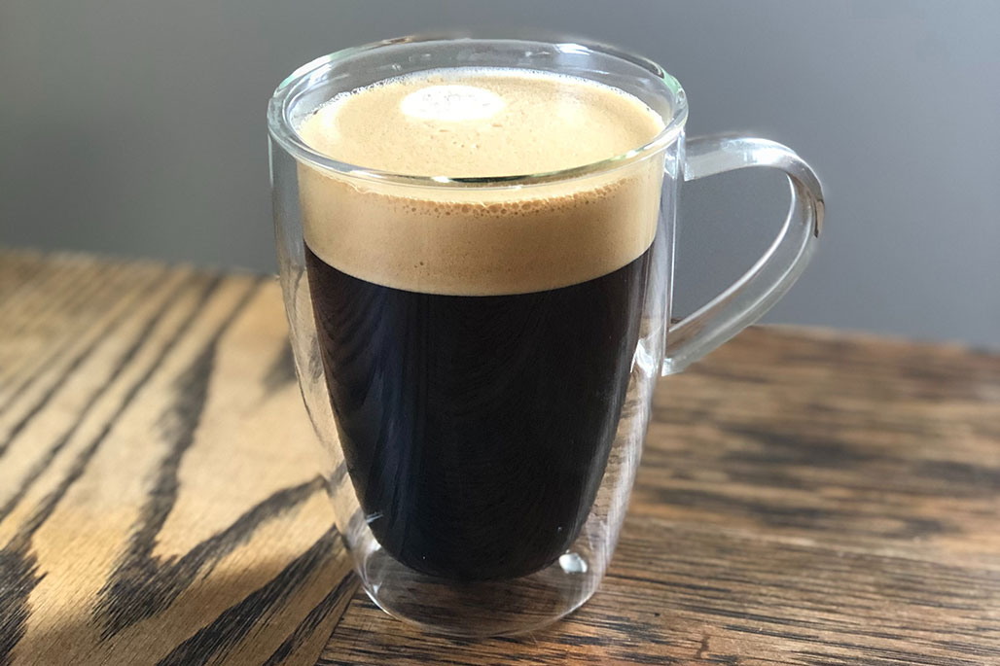

Americano

100 PHP
An Americano is an espresso -based drink designed to resemble coffee brewed in a drip filter, considered popular in the United States of America. This drink consists of a single or double-shot of espresso combined with up to four or five ounces of hot water in a two- demitasse cup.
Back to menu